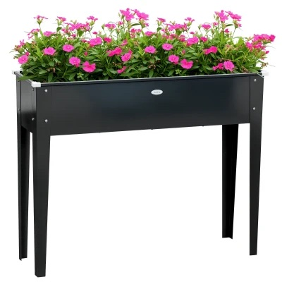

Jardinière sur pieds en acier noir 100 × 30 cm, hauteur 80 cm
100 × 30 × 80 cm
Acier galvanisé- Format étroit de 30 cm : longe un mur ou un garde-corps de balcon sans encombrer.
- Hauteur 80 cm, on jardine debout ; bac de 21 cm de profondeur pour aromatiques et salades.
- Trou de drainage : pas d'eau stagnante au fond du bac.
75 € TTC
Caractéristiques
| Dimensions | 100 × 30 × 80 cm |
| Bac de culture (intérieur) | 97 × 27 × 21 cm |
| Hauteur des pieds | 58 cm |
| Matériau | Acier galvanisé |
| Couleur | Noir |
| Charge maximale | 50 kg |